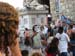

DAVID G. SIMPSON
Personal Web Site
ITALY PHOTO ALBUM: PAGE 2
Looking in the other direction along the Arno River, we see the famous Ponte Vecchio, or "Old Bridge". The bridge is open to pedestrian traffic only, and is lined with many shops on both sides. |
This is the view from on the Ponte Vecchio. Lots of shops. |
|
The Arno River, as seen from the Ponte Vecchio. |
 A street mime entertains and annoys passers-by. He seemed to be especially fond of chasing young women around the piazza. |
|
The Palazzo Vecchio, Florence's city hall. A group of us from the Esperanto congress got to go here for a reception with the mayor of Florence. |
Inside the Palazzo Vecchio, there was beautiful art everywhere. Here's what was on the ceiling above my head. |
|
The mayor of Florence addresses members of the Esperanto congress. |
On Wednesday, August 2, the congress closed down so everyone could do some sightseeing. I signed up for a tour of Pisa and Lucca. This is a view of the countryside in Tuscany from the bus, on the way to Pisa. |
|
I wasn't sure I had managed to get a picture of this, since it went by so fast. This is a Roman aqueduct in Tuscany. |
More of the countryside in Tuscany, on the way from Florence to Pisa. |
|
Our Esperanto tour group arrives in Pisa. We had an Italian-speaking tour guide with us the whole time, along with a translator who translated from Italian into Esperanto for us. There were people in our group from all over the world, and we all understood Esperanto. In this picture you can see the baptistry (foreground, left), cathedral (middle-ground), and the famous Leaning Tower in the background. This was all inside the Pisa city walls. |
The baptistry in Pisa. |
{kind=link}
{kind=link}
{kind=link}
{kind=link}
{kind=link}
{kind=link}
{kind=link}
{kind=link}
{kind=link}
{kind=link}
{kind=link}
{kind=link}
| <<< Previous | Page 2 of 5 | Next >>> |
|---|
Contact Information
I may be contacted at: